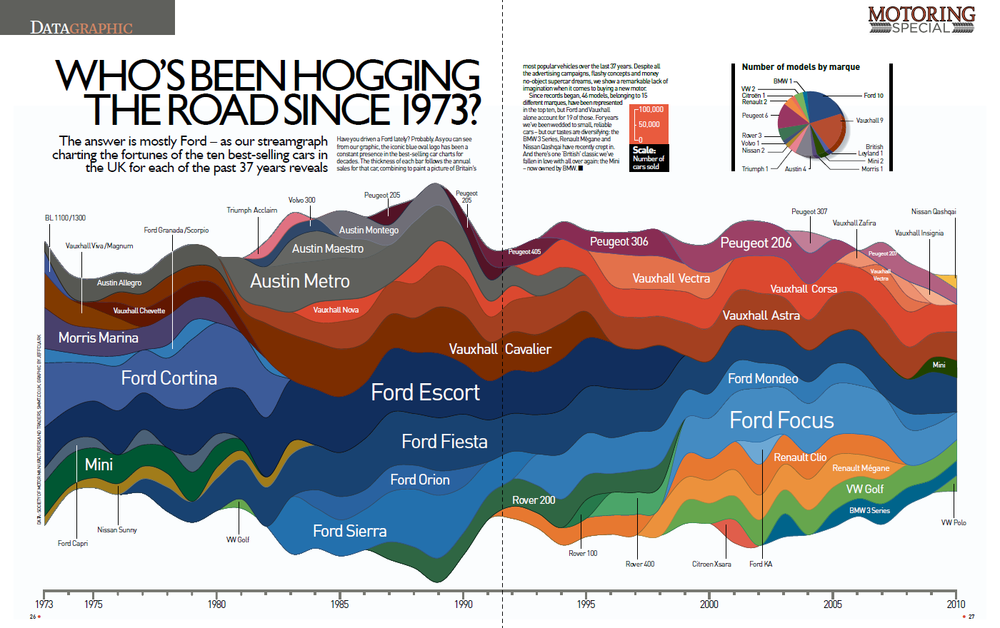
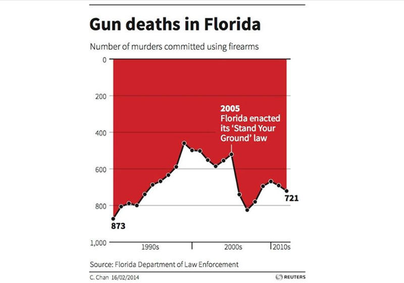

Visualization Critiques
Interactive Data Visualization (2024) Assignment 2
1: Who’s Been Hogging The Road Since 1973

What’s good about it?
- Uses a variety of colors to distinguish between different car brands, aiding long-term data tracking.
- Covers a substantial historical period, providing a deep historical perspective.
- Engaging title that clearly indicates the subject of the visualization.
What’s bad about it?
- Complexity: The chart contains many overlapping and fluctuating areas, complicating the understanding of individual market shares over time.
- Label Clarity: Text labels for some car brands are difficult to read, especially where several streams intersect in the center of the chart.
- Color Contrast: Despite the use of colors to differentiate brands, contrast issues in overlapping areas may lead to visual confusion.
- Supplementary Charts: The pie chart and bar chart on the right provide additional perspectives but their small size and placement make their relation to the main chart less apparent.
- Time Markers: The timeline at the bottom clearly indicates the years, but marking the start and end points of each brand’s dominance could improve understanding of market shifts.
Possible Improvements
- Simplification: Consider a more simplified visual design like bar or line charts to reduce visual clutter.
- Improved Labeling: Enhance label readability, especially for overlapping color areas.
- Color Allocation: Employ a color gradient or a clear legend to better differentiate between brands.
- Interactivity: If possible, add interactive elements like tooltips on hover to enhance user engagement.
- Data Narration: Add annotations or explanatory text to aid in the understanding of key data trends and changes.
Main Design Goals
- Enhance clarity and effectiveness of information presentation.
- Improve color schemes for better brand differentiation.
- Facilitate easier data reading and comprehension for viewers.
2: Gun Deaths in Florida

What’s good about it?
- Clearly presents the number of firearm-related murders over a period of time.
- Highlights specific years to help viewers compare data before and after the enactment of the 'Stand Your Ground' law.
What’s bad about it?
- Y-Axis Scale: The Y-axis is scaled in descending order of 100, which can be misleading to viewers.
- Data Highlighting: The data points 873 and 721 are specifically highlighted, without similar emphasis on other points, which may mislead viewers to think these points are more important than the rest.
- Background Color: The use of red background could carry negative connotations, implying that gun deaths are negative, which could affect an objective view of the data.
- Timeline Clarity: The timeline does not clearly mark the specific years for each data point, making the time trend of the data less clear.
Possible Improvements
- Improve Y-Axis: Display the Y-axis in a standard increasing order to prevent misinterpretation.
- Uniform Data Point Treatment: Treat all data points in the same manner, or avoid special emphasis on any individual points.
- Neutral Background Color: Use a neutral background color to avoid unintended emotional impact on data interpretation.
- Mark Timeline Clearly: Label each data point with its corresponding year to improve clarity of the time series data.
Main Design Goals
- Present data in a clear, unbiased manner that facilitates an objective interpretation.